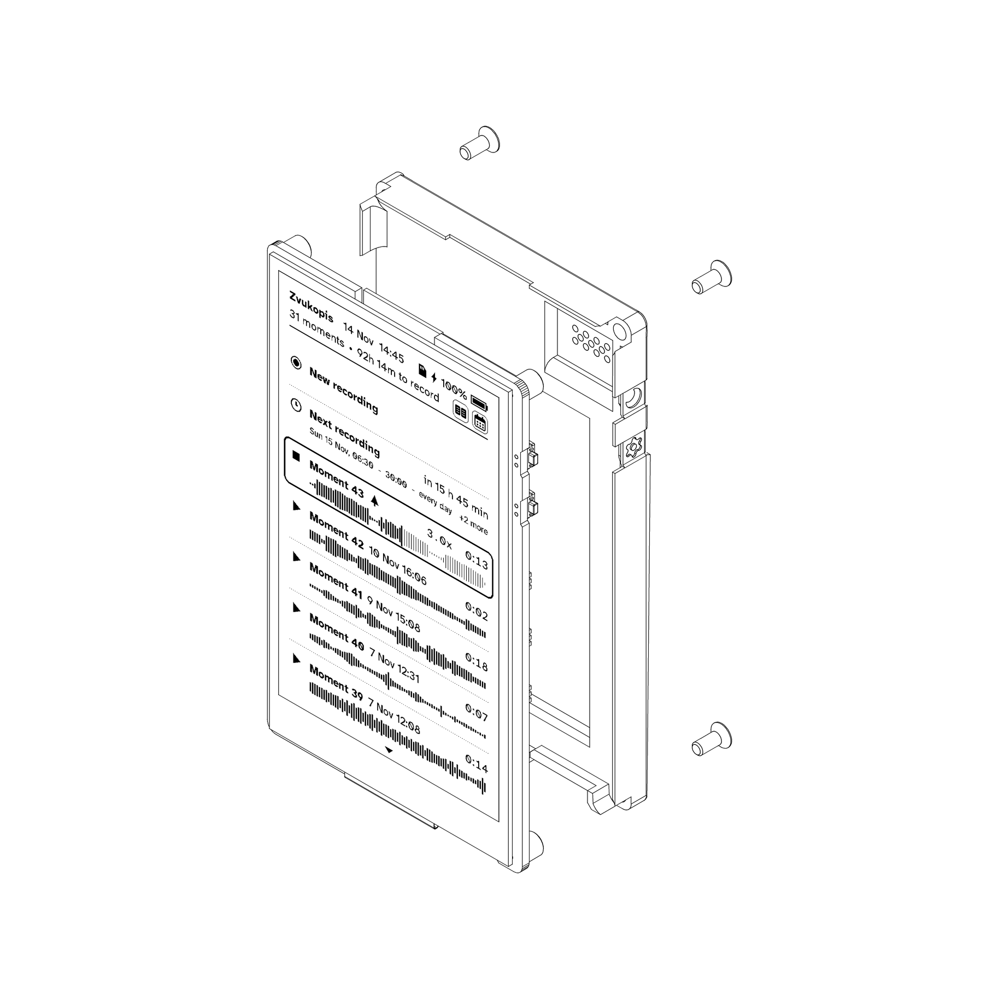

Distraction-free recording
Capture sonic moments. 96 kHz / 16-bit mono recording. Plain WAV files, with an embedded time-of-day timecode for future reference. Microphone bandwidth up to 40 kHz, capable of recording ultrasound.
an open source, DIY e-ink field recorder · a LOM project
An opinionated field recorder you build yourself
Open source, advanced recording and playback features, e-ink screen, a calendar of your sonic moments and more.
Capture sonic moments. 96 kHz / 16-bit mono recording. Plain WAV files, with an embedded time-of-day timecode for future reference. Microphone bandwidth up to 40 kHz, capable of recording ultrasound.
Build it yourself with a Waveshare e-ink board, a 3D-printed case, an SD card, a USB cable and a browser. The internal battery is standard and easy to replace. MIT licence, the full code is on GitHub.
Frequency analysis of any recording on the device, with adjustable contrast and ranges. Variable playback speed, reverse playback.
Control the device remotely over Wi-Fi, download your moments or back everything up, and set scheduled recordings. Simple Markdown e-reader for reading on the road.
No notifications, no apps, no account, no feed.
Assemble your own calm field recorder.
Zvukopis is an (opinionated) DIY field recorder designed by Jonáš Gruska and programmed by Claude by Anthropic. It is made to capture sonic moments, with their time and date. It organizes your recordings into a calendar for future reference. It has ultrasonic recording capability up to 40 kHz.
You can tag the recordings with custom tags, play them back at different speeds, and even in reverse. You can view their spectrogram and analyze the FFT spectrum. It allows for remote control and scheduled recording at a specific date and time. It has wireless connection capability, including a hotspot for off-the-grid configuration. And more.
Zvukopis is not for sale; you have to assemble it yourself. The total cost is usually less than €40. See more information below.

What you need
Putting it together
Now it is time to install the latest firmware.
Loading the firmware version…
No Install button here. This browser can't talk to USB ports. Open this page in Chrome or Edge on a computer (not on a phone) and the button appears.
To install the firmware from this page, you need a computer with Chrome or Edge, the board and a USB cable.
The firmware holds no Wi-Fi credentials; the device asks for your network the first time you start its web interface, with a QR code on its screen. Settings on the device shows the version it runs, and Settings > Firmware update shows the way back to this page.
Warning. Experimental firmware. Written by an AI (Claude) with Jonáš Gruska, tested on the device as it went, never audited. It may lose a recording, drain the battery or fail in a way nobody has seen yet. No warranty of any kind.